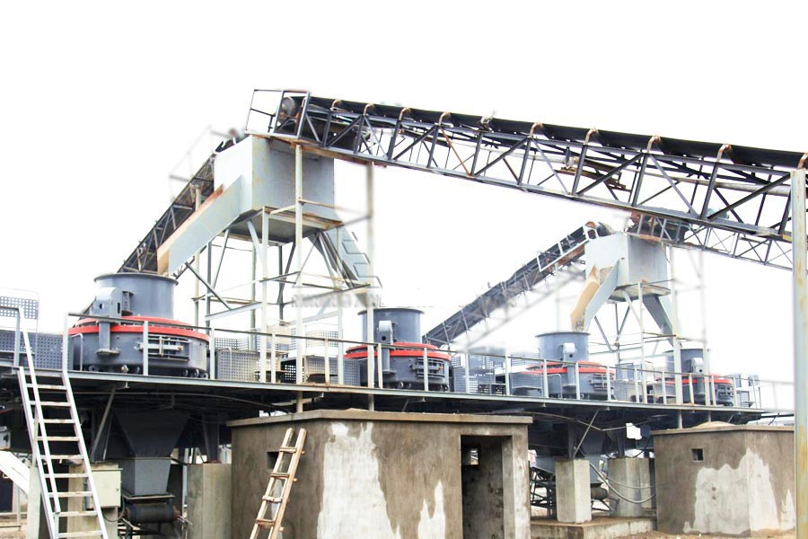
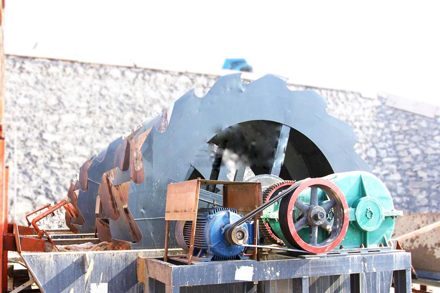

- Home >
- production line >
- manufacturers of sand crushers

Construction waste crushing production line

Mobile construction waste crushing station for urban construction waste crushing.
manufacturers of sand crushers
Sand making production line description
First, the stone crushing machine by the initial crush, and then produced into a coarse material transported by belt conveyor to the crushing machine for further crushing, crushing stone into the shaker after the screening of the two stones Sand meet feed size stones into sand sand, another part of the feed back into the small break. Sand stones into a part made of sand, sand Jingxi (optional) After washing sand finished products, and the other part into the sand making machine broken again.

manufacturers of sand crushers equipment components
manufacturers of sand crushers has a vibrating feeder, jaw crusher, sand making machine, vibrating screen and belt conveyors and other equipment combination. Depending on the process requirements, the combination of various types of equipment to meet customers’ different process requirements.

Sand production line performance introduction
The sand production line high degree of automation, low running costs, high crushing ratio, energy saving, large output, less pollution, easy maintenance, produce construction sand sand line with national standards, uniform size, grain shape is good, supporting reasonable.
Leave Me A Message, Now
If you have any questions regarding equipment prices, production line configuration or other problems, you can send a message to us, we will contact you soon.